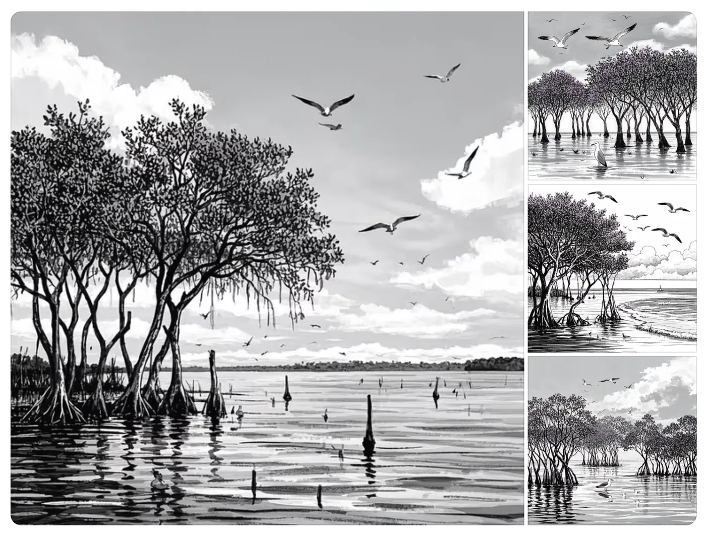
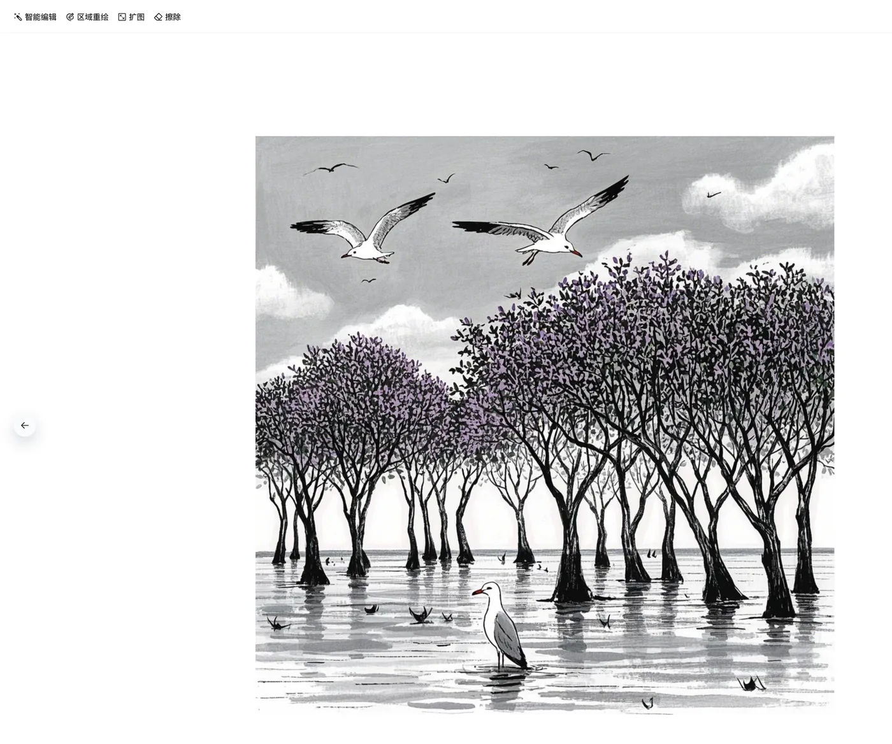
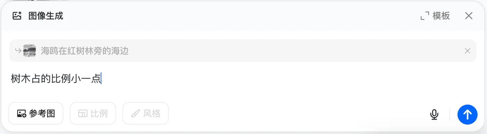
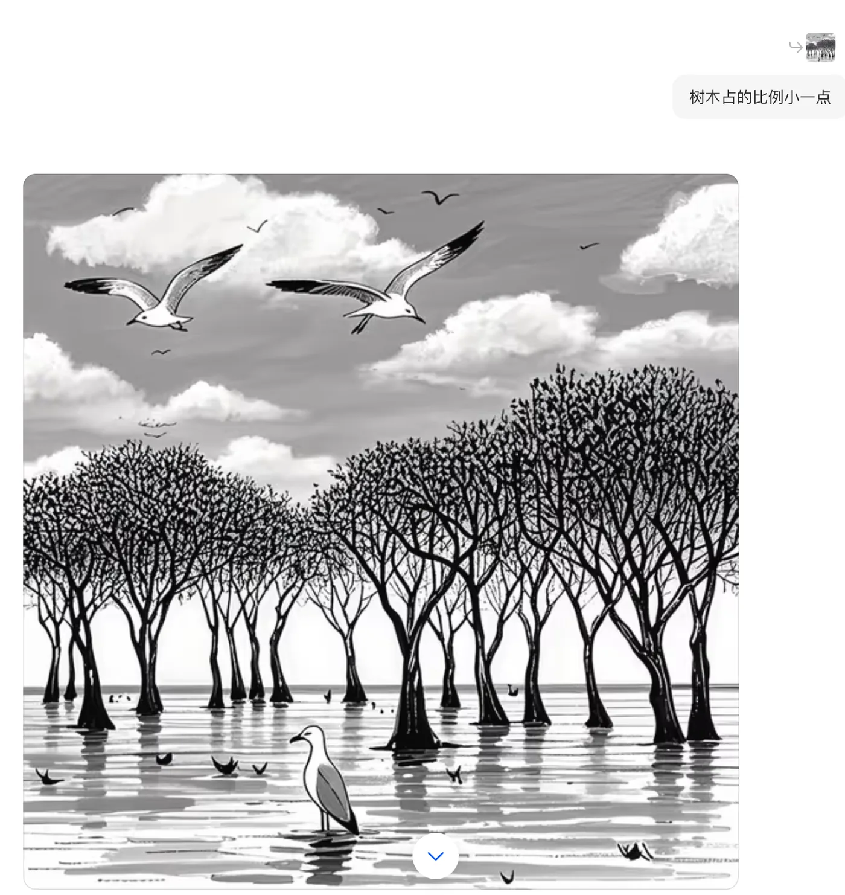
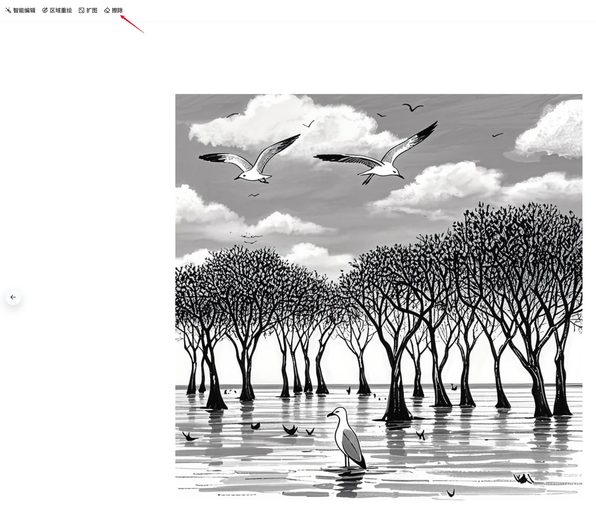
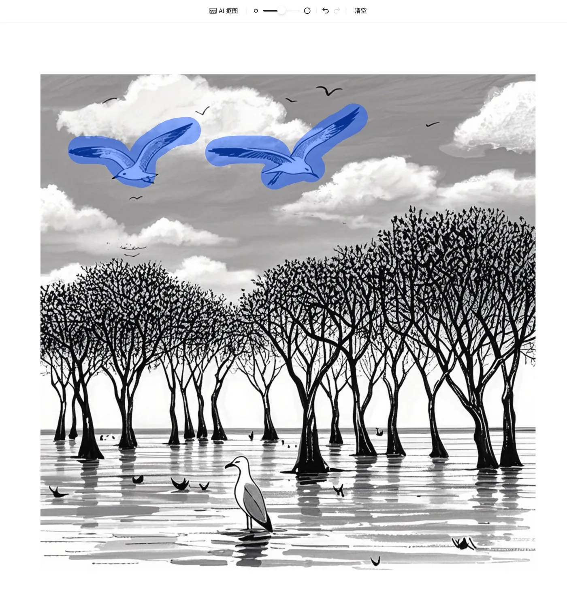
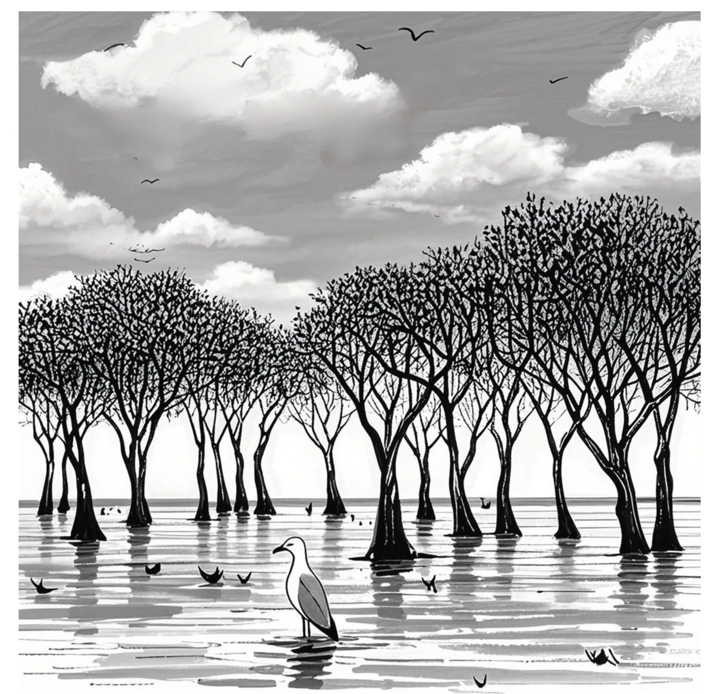
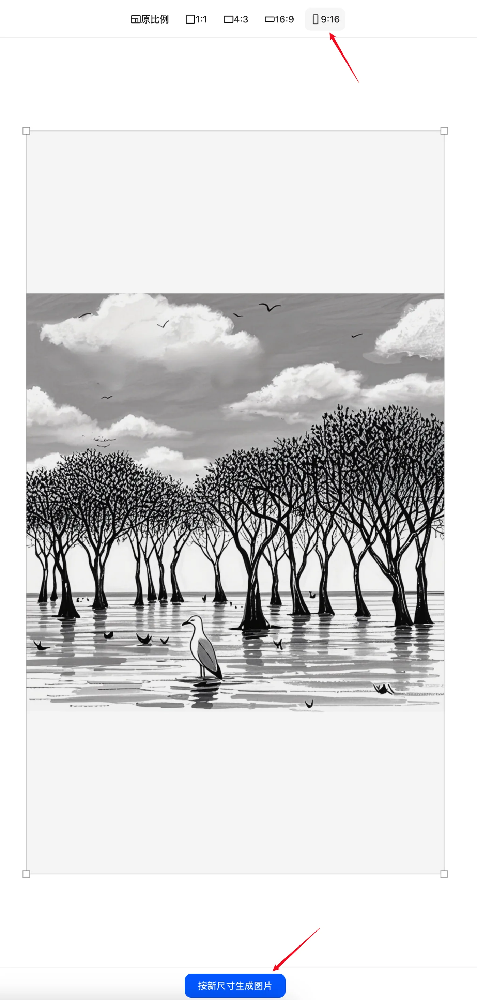
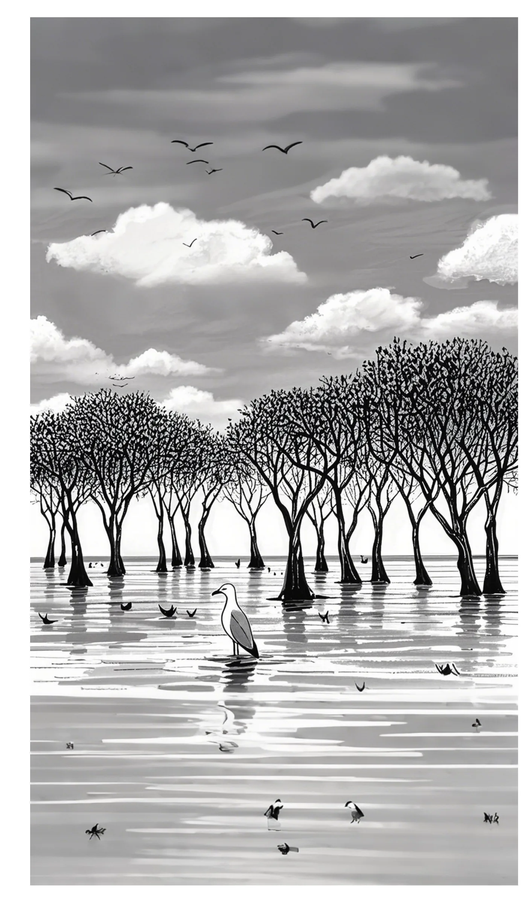

利用豆包 AI 生成书籍封面底图
以「红树林、海与海鸥」主题封面为例，完整记录从提示词生成、智能编辑、擦除工具到扩图调整为 9:16 封面的实战过程。
01 / 理解封面的元素要求
首先了解甲方的书籍封面要求。例如甲方要求底纹包含红树林、海和海鸥元素，那就把这些关键元素作为提示词的核心。
02 / 输入提示词生成候选图
在豆包软件的输入框输入：「帮我生成一张有红树林、海和几只海鸥的纯色黑白手绘风格的图」。豆包会生成四张比较符合要求的图片。

03 / 智能编辑微调细节
如果只有某一张比较符合预期，可以点选那张图片，点击左上角的「智能编辑」，针对这张图再次修改想要的效果。

例如输入「树木占的比例小一点」，点击发送，树木就会矮一点了。


04 / 擦除工具去掉多余元素
如果想要去掉天空中的海鸥，可以通过「擦除工具」处理：点击图片，选择擦除工具，涂抹想要擦除的区域，点击「擦除所选区域」。


确认后即可把多余的海鸥擦除掉，得到干净的底图。

05 / 扩图调整为书籍比例
书籍比例是 9:16，而这张图是正方形的。可以通过「扩图」功能调整：在该图左上角点击「扩图」，选择想要的比例。

再点击「按新尺寸生成图片」，就能得到一张 9:16 尺寸的封面底图。

「 生图、智能编辑、擦除、扩图——四步就能把 AI 底图调整成符合书籍比例的封面。 」
— 原创工具实践